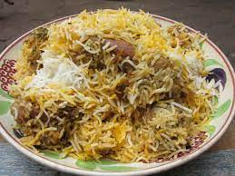

Chicken Biryani
Biryani is a mixed rice dish originating among the Muslims of the Indian subcontinent. It is made with Indian spices, rice, and meat usually that of chicken, goat, lamb, prawn, fish, and sometimes, in addition, eggs or vegetables such as potatoes in certain regional varieties.
Shawarma
Shawarma is thinly sliced cuts of meat, like chicken, beef, goat, lamb, and sometimes turkey rolled into a large piece of flatbread or pita that has been steamed or heated. Inside the pita, foods like hummus, tahini, pickles, vegetables, and even french fries are added. Think of shawarma as a Middle Eastern-style taco or burrito.Raw meat is placed on large, rotating cones. As it rotates, the meat is cooked by a heat source that is located behind the actual cone. The meat slowly falls off or is thinly sliced by a chef with a large knife. It can take several hours to fully cook.
Pizza
Human beings have been eating food similar to pizza for a long, long time. Many cultures were known to eat flatbreads topped and flavoured with different ingredients. However, most historians trace the origins of modern day pizza back to the city of Naples, in Italy. Pizza, which means pie in Italian, had long been a popular street food in Naples. However, it wasn’t until the 19th century that it really began to look, and taste, like the pizza we know today.